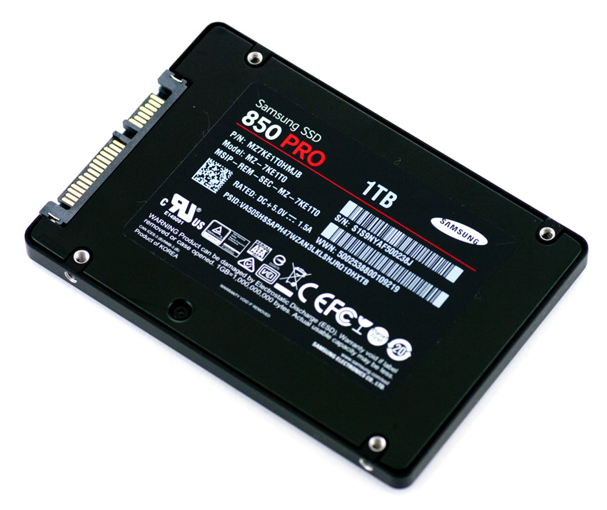
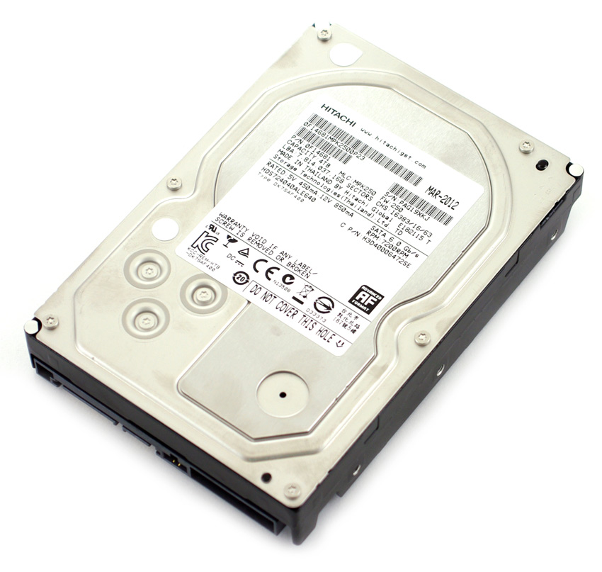

Computer Name : DESTKOP-JHA76DL
Computer Type : Hp 15-ba004ax
Computer OS : Windows 10 Enterprise 64-bit(10.0,build 17134)
Computer CPU : AMD A10-9600P RADEON R5, 10 COMPUTE CORES 4C+6G(4CPUs),~2,4GHz
CPU Technology: 28 nm
Memory : 8192MB RAM
| No | Parameter | Analysis |
|---|---|---|
| 1 | Cache Size : L1-Cache L2-Cache |
320 Kbytes 2048 Kbytes |
| 2 | Cache Location : L1-Cache L2-Cache |
Internal Internal |
| 3 | Cache Speed : L1-Cache L2-Cache Main Memory : Cycle Time (MAX) Latency Time (MAX) Main memory speed |
1 ns 1 ns 1.6 ns 13.5 ns 21.6 ns |
| 4 | Processor Type : Processor name Original Frequency CPU Technology |
AMD A10-9600P 2400Mhz 28 nm |
| 5 | Main Memory : Type Size Manufacture |
DDR4 SDRAM 8Gbytes SK Hyinx |
Comparison table between SSD & HDD
| Attribute | SSD(Solid State Drive) | HDD(Hard Disk Drive) |
|---|---|---|
| Definition | SSD (solid-state drive) is a type of nonvolatile storage media that stores persistent data on solid-state flash memory. Two key components make up an SSD: a flash controller and NAND flash memory chips. | An HDD use magnetism to store data on a rotating platter. A read/write head floats above the spinning platter reading and writing data |
| Price | Expensive, roughly $0.20 per gigabyte (based on buying a 1TB drive) | Only around $0.03 per gigabyte, very cheap (buying a 4TB model) |
| Capacity | SSD(Solid State Drive) | HDD(Hard Disk Drive) |
| Size | Typically not larger than 1TB for notebook size drives; 4TB max for desktops | Typically around 500GB and 2TB maximum for notebook size drives; 10TB max for desktop |
| Speed | Generally above 200 MB/s and up to 550 MB/s for cutting edge drives | The range can be anywhere from 50 – 120MB / s |
| Advantages | -SSD run way more faster than HDD -Better fragmentation -Better Durability -Quiet -Less power requier |
-HDD is cheaper than SSD -More capacity |
| Disadvantages | -Expensive -Less capacity |
-Slower than SSD -spinning drive made a lot of noises -More power requirement |
| Pictures |  |  |
References : https://www.storagereview.com/ssd_vs_hdd
Thank You